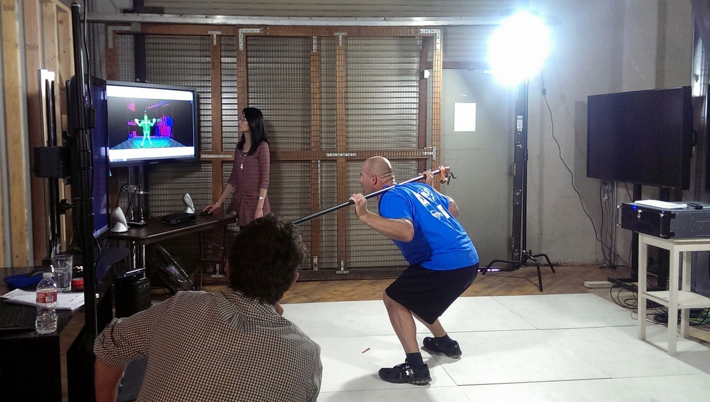
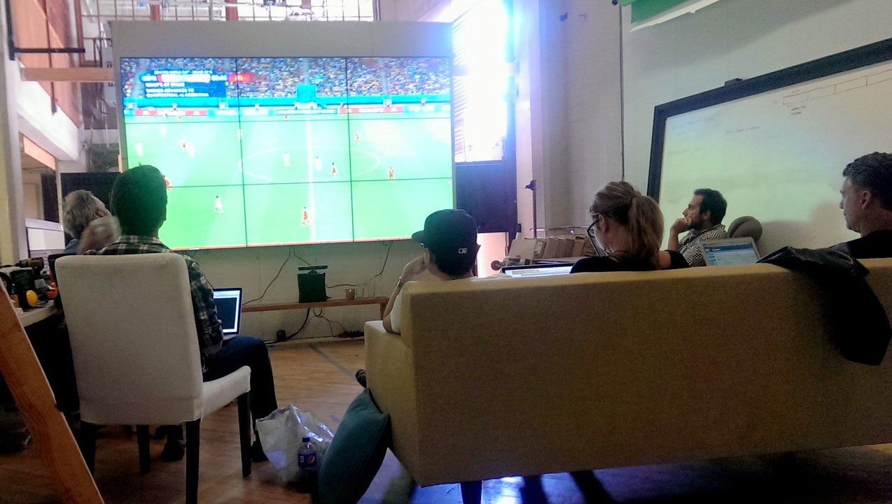

Sep 20, 2014
My Kinesis Studio Experience
Three months at Kinesis Studio was an interesting experience for me as a recent graduate. I was very pleased to work with so many amazing people in this unique start-up environment. I want to share my experience as a design intern here, and also discuss about what I've learned so far. Kinesis Studio is used to be Snibbe Interactive, they’ve done lots of public interactive installations in museum exhibitions and hospitals, mostly using Kinect or other motion tracking systems to let people interact with the projection on walls or floors. I learned about Snibbe Interactive when I was at CCA, and I’ve already heard of the cool works they did. After graduation, I was introduced to the Creative Director at Snibbe Interactive, it was not about working opportunity there, but about helping a personal installation work he was doing. I took the opportunity to ask him about potential intern position at Snibbe Interactive and shortly after, I got in as a design intern. What I did as a design intern I remembered the first day I got there I was already joining a meeting about a new project, and testing the Kinect tracking system with a client. Things are both fast and slow here, sometimes we worked late to meet all the deadlines since everyone was on multiple projects at a time, and sometimes there’s no checkpoint in a week so I can work more relax. We have the engineering department doing magic for the projects, while the creative department and the producers compiling design proposals for clients to get more projects for us. They hired me as a design intern, so I was mostly working directly with the creative director (Sean) to help wire-framing and video editing ideas for clients. In addition to the design works, I also get to work on web development and engineering with Kinect, which is more about problem-solving. Sometimes we have skype meetings with the clients or internal meetings with the engineers, so I can talk about my design to understand their thoughts and what engineers need in order to implement my design into the product.  (Trying out how Kinect tracks different sets of workout)
Learn Fast It’s a start-up environment, so I have to learn different design skills fast in order to keep up with the creative director. While doing works in the office, I sometimes spend a lot of time researching about how to design things that fit the context, and also watching tutorials about some production techniques. I have to not only learn fast but also be efficient about how I allocate my time. Be Flexible Sometimes I have to spend all day laying out screens in illustrator, and sometimes I have to help film the interaction and edit the videos. Sometimes I talked directly with the engineer to test out which design ideas work, and sometimes I sit at my desk figuring out some web development problems. I love being expose to different types of work and being flexible about what I should do. Think Higher Since we were transitioning from Snibbe Interactive to Kinesis Studio, we were still in the process of figuring out how to work smarter with clients, how to manage our projects and equipment better, and how to assign the right amount of time for designers and engineers to work things out. Even though I was just an intern who shouldn't be worried about those things, I still love to learn more from our executive producer. It’s a very different experience than working alone. Have fun Don’t be too serious, have fun talking to people, grab a lunch with them and learn about their stories. Even though things can be stressful here, we still find sometime having fun in the office.  (Watching World Cup in the studio’s big screen)
After three months, they actually really like my works and wanted me to stay with them working on more projects, but I already got another interesting opportunity for the next three months. For me it’s important to continue exploring what I really love doing, and what goals I want to achieve. I really appreciate the time I spent at Kinesis Studio, and hopefully we could still work together in the future. Special thanks to Sean for his surprised recommendation letter!